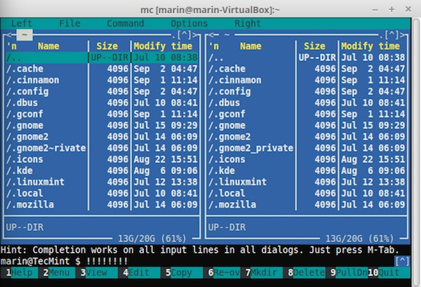
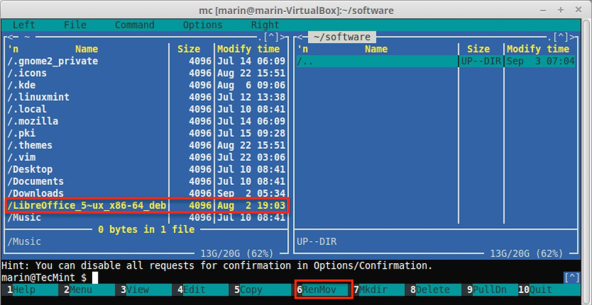
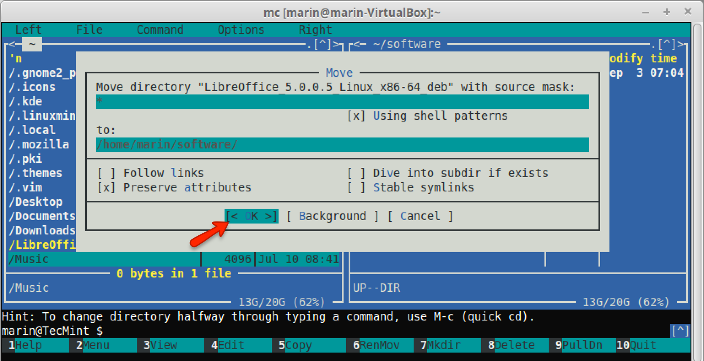

编译自：http://www.tecmint.com/10-useful-linux-command-line-tricks-for-newbies/
作者： Marin Todorov
原创：LCTT https://linux.cn/article-6314-1.html
译者： ictlyh
我记得我第一次使用 Linux 的时候，我还习惯于 Windows 的图形界面，我真的很讨厌 Linux 终端。那时候我觉得命令难以记忆，不能正确使用它们。随着时间推移，我意识到了 Linux 终端的优美、灵活和可用性，说实话，我没有一天不使用它。今天，我很高兴和刚开始接触 Linux 的人一起来分享一些有用的技巧和提示，希望能帮助他们更好的向 Linux 过渡，并帮助他们学到一些新的东西（希望如此）。
10 个 Linux 命令行技巧
这篇文章希望向你展示一些不需要很高的技术就可以像一个高手一样使用 Linux 终端的有用技巧。你只需要一个 Linux 终端和一些自由时间来体会这些命令。
执行正确的命令对你的系统来说非常重要。然而在 Linux 中有如此多的、难以记忆的各种的命令行。那么怎样才能找到你需要的正确命令呢？答案是 apropos。你只需要运行：
# apropos <description>
其中你要用真正描述你要查找的命令的语句代替 “description”。这里有一个例子：
# apropos "list directory"
dir (1) - list directory contents
ls (1) - list directory contents
ntfsls (8) - list directory contents on an NTFS filesystem
vdir (1) - list directory contents
左边你看到的是命令，右边是它们的描述。
很多时候你需要一遍又一遍执行相同的命令。尽管你可以重复按你键盘上的向上光标键，但你也可以用 history 命令替代。这个命令会列出自从你上次启动终端以来所有输入过的命令：
# history
1 fdisk -l
2 apt-get install gnome-paint
3 hostname tecmint.com
4 hostnamectl tecmint.com
5 man hostnamectl
6 hostnamectl --set-hostname tecmint.com
7 hostnamectl -set-hostname tecmint.com
8 hostnamectl set-hostname tecmint.com
9 mount -t "ntfs" -o
10 fdisk -l
11 mount -t ntfs-3g /dev/sda5 /mnt
12 mount -t rw ntfs-3g /dev/sda5 /mnt
13 mount -t -rw ntfs-3g /dev/sda5 /mnt
14 mount -t ntfs-3g /dev/sda5 /mnt
15 mount man
16 man mount
17 mount -t -o ntfs-3g /dev/sda5 /mnt
18 mount -o ntfs-3g /dev/sda5 /mnt
19 mount -ro ntfs-3g /dev/sda5 /mnt
20 cd /mnt
...
正如你上面看到的，你会得到一个你运行过的命令的列表。每一行中有一个数字表示你在第几行输入了命令。你可以通过以下方法重新调用该命令：
!#
其中要用命令的实际编号代替 #。为了更好的理解，请看下面的例子：
!501
等价于：
# history
如果你不习惯使用类似 cd、cp、mv、rm 等命令，你可以使用 midnight 命令。它是一个简单的可视化 shell，你可以在上面使用鼠标：

Midnight 命令
借助 F1 到 F12 键，你可以轻易地执行不同任务。只需要在底部选择对应的命令。要选择文件或者目录，按下 “Insert” 键。
简而言之 midnight 就是所谓的 “mc”。要安装 mc，只需要运行：
$ sudo apt-get install mc [On Debian based systems]
# yum install mc [On Fedora based systems]
下面是一个使用 midnight 命令器的简单例子。通过输入以下命令打开 mc：
# mc
现在使用 TAB 键选择不同的窗口 - 左和右。我有一个想要移动到 “Software” 目录的 LibreOffice 文件：

Midnight 命令移动文件
按 F6 按钮移动文件到新的目录。MC 会请求你确认：

移动文件到新目录
确认了之后，文件就会被移动到新的目标目录。
有时候你需要在下班几个小时后再关闭计算机。你可以通过使用下面的命令在指定时间关闭你的计算机：
$ sudo shutdown 21:00
这会告诉你在你指定的时间关闭计算机。你也可以告诉系统在指定分钟后关闭：
$ sudo shutdown +15
这表示计算机会在 15 分钟后关闭。
你可以使用一个简单的命令列出你 Linux 系统的用户以及一些关于它们的基本信息。
# lslogins
这会输出下面的结果：
UID USER PWD-LOCK PWD-DENY LAST-LOGIN GECOS
0 root 0 0 Apr29/11:35 root
1 bin 0 1 bin
2 daemon 0 1 daemon
3 adm 0 1 adm
4 lp 0 1 lp
5 sync 0 1 sync
6 shutdown 0 1 Jul19/10:04 shutdown
7 halt 0 1 halt
8 mail 0 1 mail
10 uucp 0 1 uucp
11 operator 0 1 operator
12 games 0 1 games
13 gopher 0 1 gopher
14 ftp 0 1 FTP User
23 squid 0 1
25 named 0 1 Named
27 mysql 0 1 MySQL Server
47 mailnull 0 1
48 apache 0 1 Apache
...
查找文件有时候并不像你想象的那么简单。一个搜索文件的好例子是：
# find /home/user -type f
这个命令会搜索 /home/user 目录下的所有文件。find 命令真的很强大，你可以传递更多选项给它使得你的搜索更加详细。如果你想搜索超过特定大小的文件，可以使用：
# find . -type f -size 10M
上面的命令会搜索当前目录中所有大于 10M 的文件。确保不要在你 Linux 系统的根目录运行该命令，因为这可能导致你的机器 I/O 瓶颈。
我最经常和 find 命令一起使用的选项之一是 “exec”，这允许你对 find 命令的结果运行一些操作。
例如，假如我们想查找一个目录中的所有文件并更改权限。可以通过以下简单命令完成：
# find /home/user/files/ -type f -exec chmod 644 {} \;
上面的命令会递归搜索指定目录内的所有文件，并对找到的文件执行 chmod 命令。推荐你阅读 35 个 Linux ‘find’ 命令的使用方法[4]，我肯定你会发现这个命令更多的使用方法。
你很可能知道可以使用 mkdir 命令创建新的目录。因此如果你想创建一个新的目录，你可能会运行：
# mkdir new_folder
但如果你想在该目录下创建 5 个子目录呢？运行 5 次 mkdir 命令并非是一个好的选择。相反你可以类似下面这样使用 -p 选项：
# mkdir -p new_folder/{folder_1,folder_2,folder_3,folder_4,folder_5}
最后你会在 new_folder 中有 5 个目录：
# ls new_folder/
folder_1 folder_2 folder_3 folder_4 folder_5
通常使用 cp 命令进行文件复制。复制文件通常看起来类似：
# cp /path-to-file/my_file.txt /path-to-new-directory/
现在假设你需要复制该文件到多个目录：
# cp /home/user/my_file.txt /home/user/1
# cp /home/user/my_file.txt /home/user/2
# cp /home/user/my_file.txt /home/user/3
这有点荒唐。相反，你可以用简单的一行命令解决问题：
# echo /home/user/1/ /home/user/2/ /home/user/3/ | xargs -n 1 cp /home/user/my_file.txt
有时候文件可能会变得很大。我看过由于缺乏管理技能一个日志文件就超过 250G 的例子。用 rm 命令可能不足以删除该文件，因为有大量的数据需要移除。应该避免这个很“笨重”的操作。相反，你可以使用一个简单的方法解决这个问题：
# > /path-to-file/huge_file.log
当然你需要根据你实际情况替换路径和文件名。上面的命令写一个空输出到该文件。用更简单的话说它会清空文件而不会导致你的系统产生大的 I/O 消耗。
最近我们的一个读者在 LinuxSay 论坛[5]提问说如何通过 ssh 在多个 Linux 服务器上执行一个命令。他机器的 IP 地址是：
10.0.0.1
10.0.0.2
10.0.0.3
10.0.0.4
10.0.0.5
这里有一个简单的解决方法。将服务器的 IP 地址写到文件 list.txt 中，像上面那样一行一个。然后运行：
# for in $i(cat list.txt); do ssh user@$i 'bash command'; done
上面的命令中你需要用实际登录的用户替换 “user”，用你希望执行的实际命令替换 “bash command”。这个方法非常适用于通过使用 SSH 密钥进行无密码验证[6]，因为这样你不需要每次都为用户输入密码。
注意取决于你 Linux 系统的设置，你可能还需要传递一些额外的参数给 SSH 命令。
上面的例子都很简单，我希望它们能帮助你发现 Linux 的优美之处，你如何能简单实现在其它操作系统上需要更多时间的不同操作。
via: http://www.tecmint.com/10-useful-linux-command-line-tricks-for-newbies/
作者：Marin Todorov[7] 译者：ictlyh[8] 校对：wxy[9]
本文由 LCTT[10] 原创编译，Linux中国[11] 荣誉推出
[1]: https://linux.cn/article-5485-1.html
[2]: http://www.tecmint.com/manage-file-types-and-set-system-time-in-linux/
[3]: http://www.tecmint.com/midnight-commander-a-console-based-file-manager-for-linux/
[4]: http://www.tecmint.com/35-practical-examples-of-linux-find-command/
[5]: http://www.linuxsay.com/
[6]: https://linux.cn/article-5202-1.html
[7]: http://www.tecmint.com/author/marintodorov89/
[8]: http://mutouxiaogui.cn/blog/
[9]: https://github.com/wxy
[10]: https://github.com/LCTT/TranslateProject
[11]: https://linux.cn/article-6314-1.html